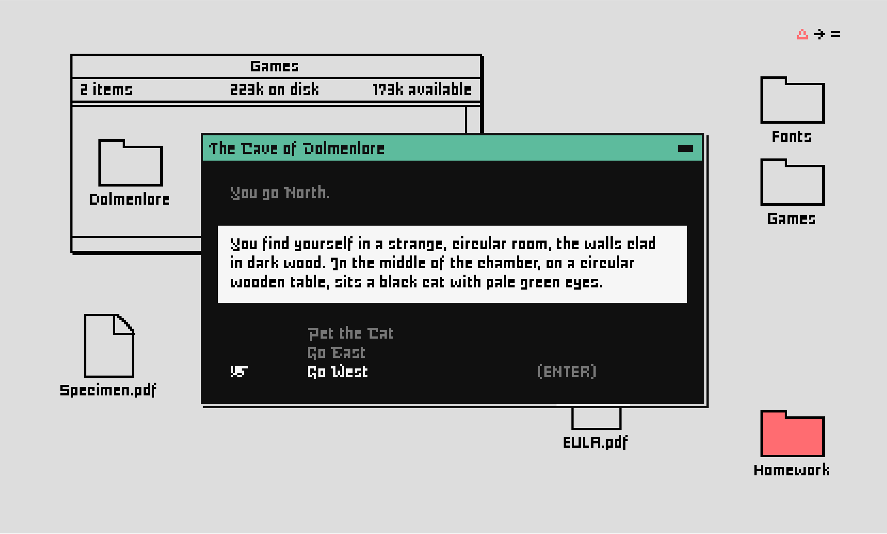

An interactive typeface specimen (2020)
Created to accompany the release of MD Eight, The Cave of Dolmenlore is a text adventure game written for web browsers. Explore the titular cave, seeking the enchanted waters of the gods, avoiding dangers and claiming treasure along the way.
